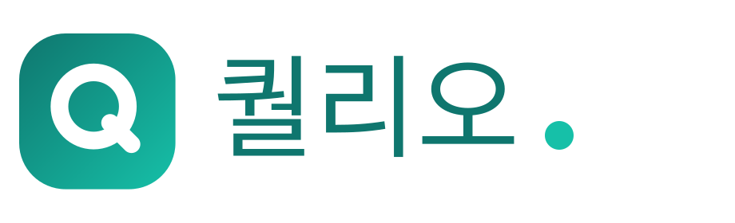
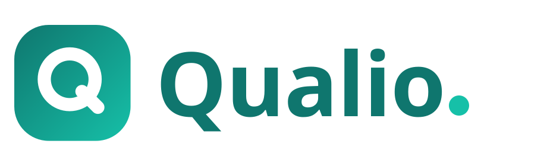
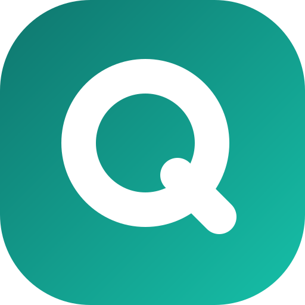
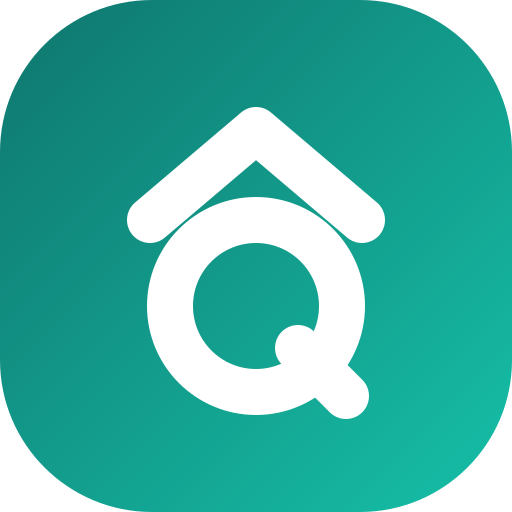
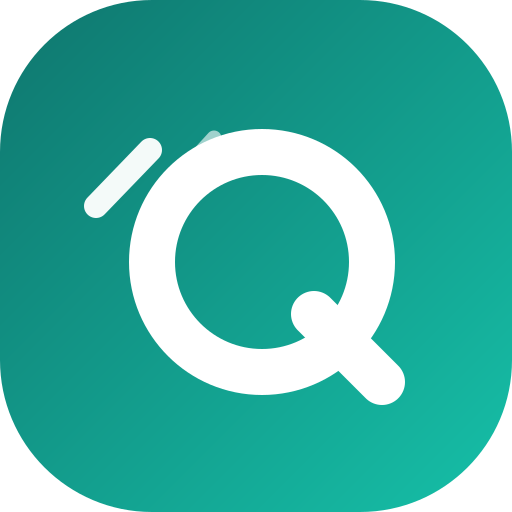
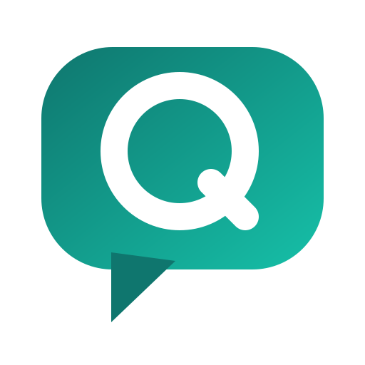
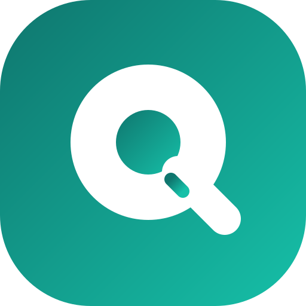
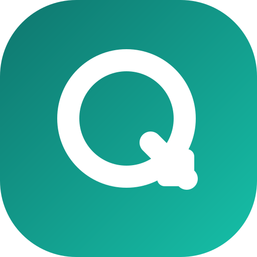

Jobber라면? 아이콘보다 친근한 워드마크를 로고의 중심에 둡니다. 둥근 굵은 글자, 따뜻한 색, 현장 사장님이 "쉽고 믿음직하다"고 느끼는 인상. 그래서 워드마크 우선 + 개념의 형상화(집·광택·소통·순환)로 구성했습니다.



라이트두툼하고 아주 둥근 Q. Jobber 특유의 따뜻하고 쉬운 인상. 워드마크와 짝이 되는 기본 심볼.

라이트지붕 + 둥근 창(Q). "집을 돌본다"는 홈케어를 형상화. 업의 정체성이 가장 직관적.

라이트Q + 닦은 자리의 반짝이는 광택선. 청소의 결과(깨끗함·윤기)를 동적으로 표현.

라이트말풍선 속 Q. 퀄리오의 핵심 가치 = 고객 소통·알림 자동화를 형상화.

라이트꽉 찬 묵직한 Q. 프리미엄·안정감. "동네 업체를 프리미엄으로"라는 약속과 맞닿음.

라이트화살표로 이어지는 Q. 견적→예약→결제→리뷰가 자동으로 도는 흐름을 형상화.